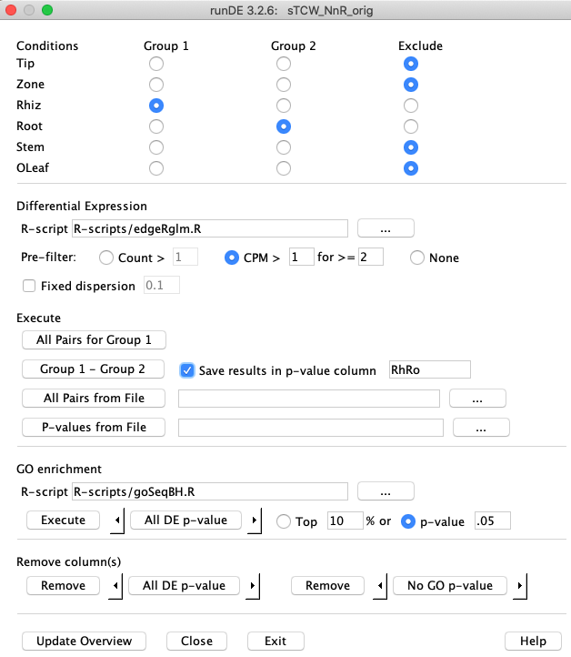

runDE - Differential Expression
runDE adds differential expression (DE) to a singleTCW database.
It uses JRI (Java-R interface) to R methods.
TCW supplies R-scripts for edgeR1, DEseq22 and GOseq3.
See Differential Expression Guide for details.
|
1. Select one condition from group 1 and another from group 2.
2. Select the R-script.
3. Only select Fixed Dispersion if no replicates.
4. Click Save results in p-value column to save the results in the database. If the two conditions
have been selected, it will provide a default name (that can be over-written).
5. Group 1 - Group 2 will run the DE method and (if Save selected) add the results to the database.
6. When all columns have been added, select Execute below the GO enrichment label.
On the terminal window, it will be left in R so that you can execute
R commands.
|

|
Execute option
All Pairs for Group 1: All conditions in Group 1 will be paired for DE analysis. For example, if Rhiz, Root, and Stem are selected, then DE columns RhRo, RhSt and RoSt will be computed.
Group 1 - Group 2: shown above.
All Pairs from File: A file will be read where the first column is Group 1, the second is Group 2 and the third is the column name. All entries will be computed and added to the database.
P-values from File: If your desired method to compute p-value is not written in R, then you can compute them
outside of the TCW environment and import them with this option.
R-scripts
A script of R commands can be provided, which uses the variables created by
runDE to compute DE and GO enrichment. RunDE
writes the data into the R environment (e.g. the count data is written to a matrix called
countData), executes the R script using the source command, and
reads the results from the variable called results.
The edgeRglm.R and
goSeqBH.R scripts are supplied as example. For GO enrichment, the goSeqBH.R script
is provided; for the demo only, the goSeqNoFDR.R if provided.
- edgeR - Robinson MD, McCarthy DJ, Smyth GK (2010) edgeR: a Bioconductor package for differential expression analysis of digital gene expression data. Bioinformatics 26: 139-140.
- DESeq2 - Love MI, Huber W and Anders S (2014) Moderated estimation of fold change and dispersion for RNA-seq data with DESeq2. Genome Biology 15:550.
- GOSeq - Young MD, Wakefield MJ, Smyth GK, Oshlack A (2010) Gene ontology analysis for RNA-seq: accounting for selection bias. Genome Biology 11: R14.
{kind=link}